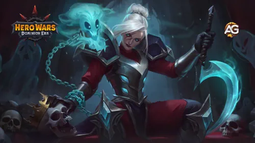
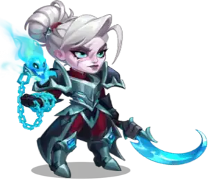
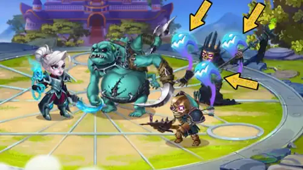
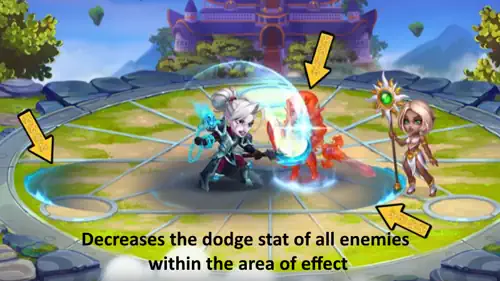
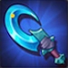
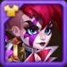

Lyria is the latest addition to the Hero Wars: Dominion Era roster, and she's turning heads with her eerie powers and incredible utility on the battlefield.
This guide is here to walk you through everything you need to know about her from skills and artifacts to the best allies and counters. Whether you’re a beginner or a seasoned player, get ready to discover how Lyria can shake up your team comps and maybe even the entire meta.

Lyria Guide, Hero Wars: Dominion Era, a game developed by Nexters.
Who Is Lyria?
Lyria had to learn to cope with her blood-chilling gift from a young age. The only thing more harrowing than seeing ghosts was hearing their haunting wails wherever she went. It was hard, but eventually, she realized that ignoring the spirits wouldn't make the problem go away. It turned out that making deals with the dead was a much better solution, and as an added bonus, it granted her power. One of the deals she made helped a truly powerful spirit named Keira break her curse and granted her the chance to rest in peace one day.

Class: Warrior
Position: Front Line
Main Stat: Strength
Special Trait: Undead
Lyria Overall Rating in the Meta
Control: ⭐⭐⭐⭐⭐
Damage: ⭐⭐⭐
Synergy: ⭐⭐⭐⭐⭐
Independence: ⭐⭐⭐⭐
Lyria – Maximum Stats Hero Wars: Dominion Era
Lyria – Maximum Stats
Stat
Value
Stat
Value
Health
1,070,599
Physical Attack
77,825
Strength
18,727
Armor
37,703
Magic Defense
30,739
Armor Penetration
17,450
Agility
2,586
Intelligence
2,451
Magic Attack
7,353
Accuracy
18,727
Crit Resistance
18,727
Power
185,246
Pros and Cons of Lyria
Pros
Strong synergy with undead allies.
Great at shutting down dodge-based heroes.
Passive aura provides consistent team buffs.
Can heal herself and a key ally with vampirism.
Cons
Needs undead allies to unlock full potential.
Not very effective without team coordination.
Limited damage if few units die for soul collection.
Lyria Skills Upgrade Priority – Hero Wars: Dominion Era
Lyria’s four skills cover burst damage, vampirism support, crowd control, and a passive aura — here’s the best order to evolve them for maximum impact.
1st – Soul Reaper
In-game description: Lyria collects a soul every time someone dies on the battlefield. Once activated, Lyria opens a portal to the realm of the dead, unleashing vengeful spirits. The portal releases at least 3 spirits, with each of them dealing one strike. The number of extra spirits scales with the number of reaped souls but cannot exceed 7. Each extra hit consumes one reaped soul. All hits target the enemy with the lowest health.
Skill Explanation: Think of Soul Reaper like charging up power by saving souls during battle — every death (yours or the enemy’s) adds a charge. When you activate it, Lyria sends out ghost spirits that each deal one hit of Physical Damage to the weakest enemy. She always launches at least 3 hits, and up to 7 if you’ve collected enough souls. Since the damage formula is based on her Physical Attack, every upgrade directly makes each hit stronger — and with up to 7 hits, those gains multiply fast.
Formula – Physical Damage per hit:41,521 (45% Physical Attack + 50 × level)
Evolution Priority:Very High – This is Lyria’s main source of burst damage. Each level increases damage per hit, and since she can deal up to 7 hits in a single activation, the total damage boost per upgrade is enormous. Always upgrade this skill first.
Skill Animation Info
Formula – Physical Damage per hit: (45% Physical Attack + 50 × level = 41,521)
In-game description: Lyria binds herself to the ally with the highest physical attack for 12s. Both Lyria and the bonded ally receive a vampirism bonus. While the Bonds of Alliance are active, vampirism restores health for them both. If the bonded ally is undead, they both get a physical attack bonus.
Skill Explanation: Lyria creates a magical bond with her strongest physical damage dealer. “Vampirism” means that a portion of the damage dealt is converted into healing — so both heroes heal themselves simply by attacking. If the bonded ally is an undead hero like Keira or Corvus, they both also receive a bonus to Physical Attack, making them hit harder and heal even more. Upgrading this skill increases both the vampirism percentage and the physical attack bonus.
Formula – Vampirism Bonus:20% (0.1153847 × level + 5)
Bonds of Alliance Skill – Lyria, Hero Wars: Dominion Era.
Evolution Priority:High – This is the backbone of Lyria’s support role. It keeps both her and her main DPS ally alive through vampirism, and when paired with an undead hero the attack bonus amplifies their damage significantly. Upgrade this second, right after Soul Reaper.
Skill Animation Info
Formula – Vampirism: (0.1153847 × level + 5 = 20%)
In-game description: Lyria summons 3 spirits. The spirits chase the enemy who has dealt the most damage in the last 10 seconds. The effect lasts 10 seconds. While the spirits are present, the chased hero cannot attack anyone except them, while other heroes cannot target the spirits.
Skill Explanation: This skill is crowd control — it forces the most dangerous enemy hero to attack only the 3 summoned spirits for 10 seconds, effectively removing them from the fight. Think of it as putting a threat in “time-out” while Lyria’s team focuses on others. The spirits have their own Health based on Lyria’s total health. Upgrading this skill increases the spirits’ health, making them survive longer before the targeted enemy breaks free. Especially powerful against high-burst attackers like Dante or Ishmael.
Formula – Spirit Health:12,426 (0.25% Health + 75 × level)

Children of the Grave Skill – Lyria, Hero Wars: Dominion Era.
Evolution Priority:Medium – The crowd control is useful, but the upgrade gain (spirit health) is less impactful than increasing damage or vampirism. Upgrade this last, after Soul Reaper, Bonds of Alliance, and Shackles of Doom are already leveled up.
Skill Animation Info
Formula – Spirit Health: (0.25% Health + 75 × level = 12,426)
In-game description: Passive skill. The hero exudes an aura that decreases the dodge stat of all enemies within the area of effect. All affected enemies receive additional physical damage from physical attacks. The size of the aura scales with the number of undead units in allied team.
Skill Explanation: This passive aura works automatically every battle — no button needed. “Dodge” means the chance an enemy has to avoid your attacks entirely. By reducing their dodge, your physical heroes land more hits consistently. On top of that, every hit that connects deals extra Physical Damage. The more undead allies you have, the wider this aura spreads, covering more enemies at once. Upgrading it increases how much dodge is reduced and how much extra damage enemies take. It’s essential against dodge-heavy teams like Dante or Yasmine.
Formula – Extra Physical Damage per hit:7,783 (10% Physical Attack)

Shackles of Doom Skill – Lyria, Hero Wars: Dominion Era.
Evolution Priority:High – Even though it’s passive, this aura provides constant value in every single battle. Reducing enemy dodge is game-changing against teams built around Dante, Heidi, or Yasmine. The extra physical damage also stacks up across a long fight. Upgrade this alongside Bonds of Alliance as your second priority group.
Lyria benefits most from pets that boost physical teams, offer healing or control, and enhance undead synergy in battle.
1st Place:
Fenris
Fenris offers armor penetration and physical attack, increasing Lyria’s damage output. The chance to blind enemies with basic attacks provides strong control, ideal with her passive aura and vampirism setup.
2nd Place:
Oliver
Oliver grants health and armor, which increase Lyria’s survivability. His patronage skill provides auto-healing below 50% health, synergizing well with her vampirism and allowing her to stay longer in battle.
3rd Place:
Biscuit
Biscuit reduces enemy healing, which helps control enemy sustain. However, his magic attack bonus is less ideal for Lyria, whose power scales better with physical stats and undead synergies.
Lyria Artifacts Priority
Lyria’s artifacts enhance her physical damage and survivability. Prioritizing the right ones will boost her impact in battle and support her core abilities.

1st - Khopesh of Speaker with the Dead:
Grants Armor Penetration to boost physical damage output.
Evolution Priority: 1
2nd - Defender's Covenant:
Increases both Armor and Magic Defense. Great for frontliners.
Evolution Priority: 3
3rd - Ring of Strength:
Boosts Strength, which increases her physical attack power and health.
Evolution Priority: 2
Lyria Glyph Evolution Priority
Lyria is a frontline Warrior and Support hero whose main stat is Strength. Investing in the right glyphs enhances her survivability, damage output, and vampirism synergy. If she's dying too quickly in battle, consider prioritizing defensive glyphs earlier. Here's the evolution priority of her glyphs based on their real combat value.
1st – Physical Attack:
This directly boosts Lyria’s skill damage and the effectiveness of her vampirism, making it the top priority.
Evolution Priority: High
2nd – Strength:
As her main stat, Strength gives Lyria +1 Physical Attack and +40 Health per point, making it a great all-around stat for damage and survivability.
Evolution Priority: High
3rd – Armor:
Boosts her resistance against physical attackers, which is important for a frontline tank-support hybrid like Lyria.
Evolution Priority: Medium
4th – Health:
Improves her durability but is less efficient than Strength, which already grants Health and Physical Attack.
Evolution Priority: Medium
5th – Magic Defense:
Situationally useful against mages but the least impactful glyph overall for her core role.
Evolution Priority: Low
Best Skins for Lyria – Hero Wars: Dominion Era
Choosing the right skin to evolve first can greatly improve her survivability and damage output. Below is the skin evolution priority for Lyria based on their real combat effectiveness.
Default Skin: Strength +1365
Boosts both physical attack and max health. Since Strength is her main stat, this skin increases her survivability and also enhances her vampirism-based healing. It’s essential if Lyria is dying too quickly in the front line.
Evolution Priority: High

Masquerade Skin: Physical Attack +7095
Greatly increases her damage output and synergizes with her vampirism ability, but does not improve survivability. Best upgraded after boosting Strength with the Default Skin.
Evolution Priority: Medium
Winter Skin: Health +106,670
Provides a massive health boost, significantly improving Lyria's durability on the front line. A great secondary upgrade after the Default Skin if you need extra survivability.
Evolution Priority: High
Ceremonial Skin: Armor Penetration +10,650
Increases armor penetration, improving her physical damage against heavily armored targets. Obtainable from the Tournament of Hero Power. Upgrade after the Default and Winter skins.
Evolution Priority: Medium
Best Allies
To get the most out of Lyria, pair her with heroes that either benefit from her vampirism or help trigger her passive skills.
Undeads Allies
Phobos: Undead mage who benefits from her passive and supports magic teams.
Corvus: Great tank with good physical attack and buffs. His synergy with undead is ideal for Lyria.
Morrigan: The undead support who summons skeletons to feed Lyria's passive aura and reaping souls.
Keira: As an undead hero with strong synergy with Lyria, Keira gains additional vampirism and benefits greatly from Lyria’s buffs.
Other Physical DPS Heroes
Dante, Ishmael, Lara Croft: High physical DPS heroes who benefit from Lyria's vampirism buff in skill 2.
Strong Against
Lyria is extremely effective against dodge-reliant heroes. Her passive reduces dodge and boosts incoming physical damage, making the following heroes vulnerable:
Dante
Heidi
Yasmine
Pet Cain Teams
Best Synergy with Lyria
Here are a few team compositions where Lyria truly shines, mixing both synergy and strong counters.
Discover the top War Flags to boost Lyria's support and healing potential in Hero Wars: Dominion Era.
War Flag of Recovery:
This flag increases all healing effects by 10%, directly enhancing Lyria’s core role as a healer and support unit. Her healing-over-time abilities and burst heals benefit greatly from this bonus, improving her effectiveness in keeping allies alive during drawn-out fights.
Lyria and Team Benefit: Amplifies Lyria’s healing output for both single-target and team-wide heals, making her a much more impactful support unit, especially in high-sustain compositions. This flag is the top choice when using Lyria in any healing-focused strategy.
War Flag of Decline:
This flag reduces enemy healing by 10%, weakening enemy sustain while Lyria maintains strong healing support on her own team. This effect is especially valuable in mirror matches or against teams with powerful support heroes like Aidan or Markus.
Lyria and Team Benefit: Complements Lyria’s healing by ensuring that the enemy team cannot easily recover, giving your team a sustained edge in longer fights. It’s particularly useful in control-heavy or poke teams that aim to slowly wear down opponents.
Best Teams for Lyria - Hero Wars: Dominion Era
Team 1# Analysis:
This team composition focuses on maximizing Lyria's healing potential while providing strong support and control through synergy with Ishmael vampirism.
You can also use this team at Area of Conquest Event for optimal performance and sustainability.
This team focuses on maximizing Lyria's healing potential while providing counter to Dante teams.
You can replace Lara Croft for Kayla, Keira or Adam as your main damage dealer.
While Sebastian provides additional support and utility to the team against debuffs and buff for crit hit Galahad provides tankiness and AoE damage for the team.
She very well might be. With the right undead setup or high-DPS partner, she can be a game changer in both Arena and Campaign. Keep experimenting and let us know what killer combos you discover!
Lyria Guide Conclusion
Lyria is a unique and versatile front-line Warrior who thrives in battles where souls are reaped and alliances are strategic. Her ability to interact with undead allies, apply vampirism, and punish dodge-reliant enemies makes her a powerful addition to many team compositions. Whether she’s supporting high physical damage dealers like Dante or Ishmael, or strengthening undead synergies with heroes like Corvus and Morrigan, Lyria proves herself as a valuable and game-changing hero. With smart skill and artifact evolution, she can be the cornerstone of both aggressive and control-based teams in the evolving
Video Suggestion
Video: Lyria's Complete Guide for Hero Wars: Dominion Era
Did you like our Lyria Guide for Hero Wars Web and Facebook? Is there something you didn't understand or would like to suggest changes to? We invite you to join our comment section on the Alexandre Games Blog page. Feel free to express your opinion, clarify your doubts, and share your suggestions. Click the button below to get started:
 1,070,599
1,070,599 77,825
77,825 18,727
18,727 37,703
37,703 30,739
30,739 17,450
17,450 2,586
2,586 2,451
2,451 7,353
7,353 18,727
18,727 18,727
18,727 185,246
185,246


 Adam Guide for Hero Wars: Dominion Era – Skills, Builds & Best Teams
Adam Guide for Hero Wars: Dominion Era – Skills, Builds & Best Teams
 Aidan Guide for Hero Wars: Dominion Era – Skills, Builds & Best Teams
Aidan Guide for Hero Wars: Dominion Era – Skills, Builds & Best Teams
 Augustus Guide for Hero Wars: Dominion Era - Best Build & Strategy
Augustus Guide for Hero Wars: Dominion Era - Best Build & Strategy Byrna Guide for Hero Wars: Dominion Era - Best Build & Strategy
Byrna Guide for Hero Wars: Dominion Era - Best Build & Strategy Electra Guide for Hero Wars: Dominion Era - Best Build & Strategy
Electra Guide for Hero Wars: Dominion Era - Best Build & Strategy The Ultimate Fluffy Guide for Hero Wars: Dominion Era
The Ultimate Fluffy Guide for Hero Wars: Dominion Era